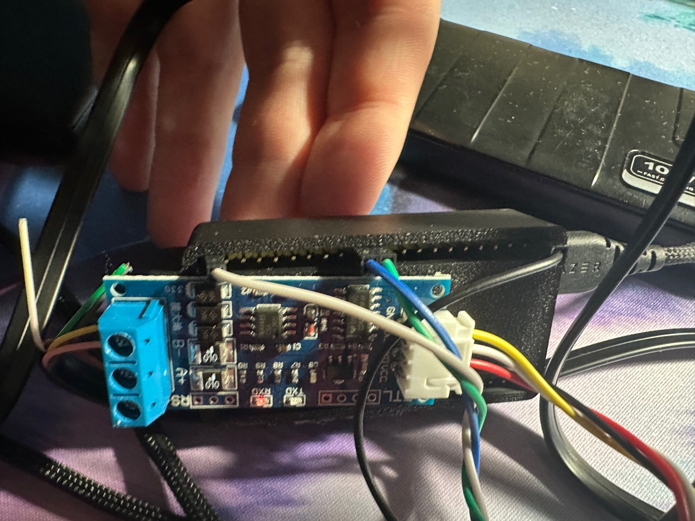
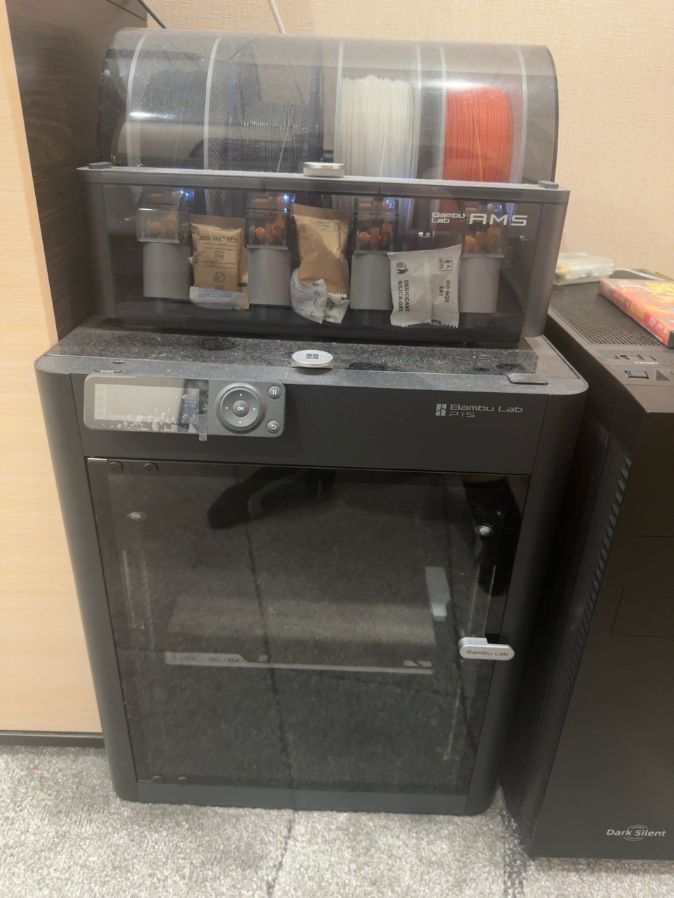

From Feb 2020
Senior PHP Developer · TCB Hard + Software
Built and maintained PHP applications for a digital media platform, with a focus on product development, reliability and long-term maintenance.

Resume Profile
Kyiv, UkraineRemote via Ukrainian FOP
Middle / Senior / Tech LeadFull-time or contract
LanguagesEnglish · German · Ukrainian · Russian
PHP · Laravel · Lumen · Symfony · Vue.js · TypeScript · AI-assisted product development
Full-stack engineer with more than 10 years of commercial PHP experience across the Laravel, Lumen and Symfony ecosystems, including Symfony microframework work. I also build with Vue.js, JavaScript and TypeScript, modernising web products, APIs and databases. I use AI tools across research, implementation and review, and can contribute as a developer or take technical ownership of a team and its architecture.
Experienced in building systems that must operate reliably under real-world constraints: high load, distributed devices, unstable networks, long lifecycle products, and evolving business requirements.

Strong at:
I work across application code, infrastructure and connected devices, and I enjoy learning the tools a problem calls for.
Distributed video platform: Contributed to a distributed media platform spanning applications and connected devices, with a focus on reliable playback and remote operations.

Open to a new role or contract opportunity. TCB Hard + Software was a previous role.
Roles are listed by their documented start dates.
Built and maintained PHP applications for a digital media platform, with a focus on product development, reliability and long-term maintenance.
Laravel backend and Vue/TypeScript frontend.
PHP development in the MediaWiki / BlueSpice ecosystem.
Laravel dashboards and marketplace APIs.
Laravel, Vue.js and MySQL product development.
Search optimisation and web delivery.
BREADTH THROUGH CONCRETE WORK
My commercial foundation is PHP and full-stack development. My wider engineering work connects web products with infrastructure, connected devices, local AI tools and specialised applications. The examples below span professional work, independent products and active prototypes.
Commercial foundation
More than 10 years of commercial PHP experience across Laravel, Lumen, Symfony and the MediaWiki / BlueSpice ecosystem. Work spans APIs, data models, multi-tenant platforms, Vue interfaces and legacy modernisation.
The connecting skill is working through an existing system, understanding its constraints and improving it across frontend, backend and operations.
Professional platform work
Developed and maintained digital media products, combining web applications with connected devices.
Focused on reliable operation, usability and long-term support.
Infrastructure & operations

Experience with production infrastructure, Linux operations, monitoring, networking and remote support.
Built practical tooling to help teams keep services and devices maintainable.
Developer tooling & integration

Developed local AI and developer tools across C++ and Python, including model integration and workflow automation.
AI supports implementation, tests and reviews. Tabula / Punchenko NNL explores experimental language and model workflows; research results remain under evaluation.
Product projects

Fermershop combines a storefront with operational tools. I worked on the catalog, product data and dependable delivery.
Other commerce work includes the 6 Moments / Shop Jewel storefront and OpenCart extension packaging.
Practical tools
Desktop utilities built with Rust and Tauri include an Excel workflow tool and a macOS device-management interface.
TidyDrive is an active cross-device prototype; Frequent Tab is a local Chrome extension. Hardware validation of the new TidyDrive flow is ongoing.
Product integration

Rezar combines a Python Telegram bot, a mobile catalogue, search and filtering, vehicle detail pages, enquiry handling and a catalogue administration interface.
The broader project portfolio also covers task marketplaces, family coordination interfaces, video utilities and tattoo-concept workflows. The common theme is taking a specific user task through to an operational product flow.
Device integration

Hands-on work with ESP32, ESPHome, Home Assistant, UART, RS-485 and CAN: device integration, firmware configuration, local web controls, OTA workflows and electronics debugging.
Projects connect physical hardware with software interfaces, including air-conditioner integration and climate-control interfaces. Soldering, connector work and 3D-printed enclosure prototyping complement the software work.
Independent projects

Neon Crown explores gameplay and world systems with Unreal Engine and C++, including interaction, HUDs, scene integration and build/release tooling. MythicBoost is a Lua-based World of Warcraft add-on with a configurable HUD and gameplay analysis.
Electronic music production as Techno Punch adds composition, sound, artwork and video presentation. These projects show an interest in the full experience a person sees, hears and interacts with.
AI-NATIVE ENGINEERING
I design AI-native engineering workflows where AI agents support the full delivery loop: problem framing, planning, implementation, testing, code review, deployment, monitoring, and support — with human ownership, validation, and production reliability.
I keep the customer request, task specification and delivered result connected. My contribution includes problem framing, coordination and hands-on review of the implementation.
SELECTED OUTCOMES
Image and video products with reliable operation across connected devices.
Multi-tenant architecture, modular backends and modern Vue interfaces.
C++ tooling, AI-assisted workflows and reproducible assessments.
MORE THAN WEB APPS
Local AI experiments, developer tools and automated technical assessments.
Experience in operations, monitoring, networking and embedded Linux.
OPEN SOURCE & SYSTEMS
Contributions in the Wikipedia ecosystem and to Linux kernel patches, with an understanding of runtime environments, performance and system constraints.
HOW I WORK / ARBEITSWEISE
Four perspectives on my work. Open a card for the full detail.
ARCHITECTURE
Build systems teams can understand and keep improving.
OWNERSHIP
Connect data models, APIs, performance, security and technical decisions.
DOMAINS
Platforms across SaaS, content, device control and edge infrastructure.
WORK STYLE
Prototype, document clearly and ship predictably.
SELECTED WORK
A few screens and devices from work across frontend, backend, games and electronics.
Panel for managing reverse proxy routes and seeing the containers behind them, with validation and rollback before reload.
A storefront paired with practical back-office tools for catalog, stock and sales workflows.
Freelance work. Clear payouts.
A freelance marketplace interface for tasks, applications, account activity and crypto-denominated payouts. The English panel above is a presentation of the interface, not a live account screenshot.
Playable forest camp with characters, HUD, interaction and world systems.

A local interface for managing climate conditions: lighting schedules, ventilation, temperature and humidity controls.

Hands-on prototyping, soldering and debugging across connected devices. The pictured RS-485 wiring is one example of how I test the interface between hardware and software.

HANDS-ON HARDWARE
My Bambu Lab P1S with AMS. I use 3D printing as part of my hands-on work with electronics and physical prototypes.
TECHNO PUNCH
My electronic music: composition, production and visual presentation. Choose a video to open the YouTube player.
LET'S TALK
A role, a project or a concrete technical challenge: send me a message and we can find a good starting point.
Write to meWe can agree scope and contract terms directly.